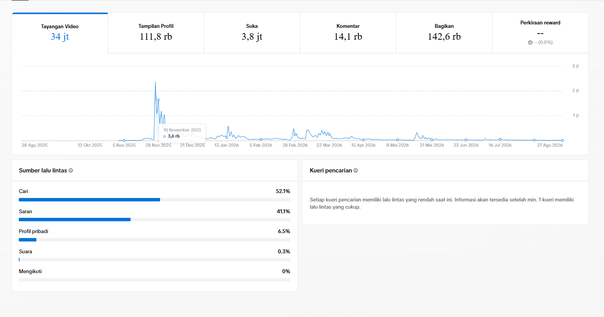
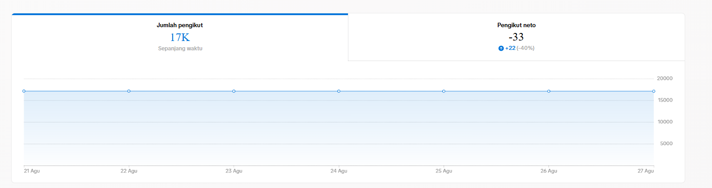
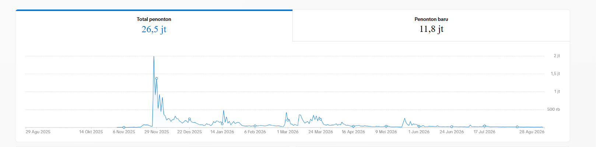
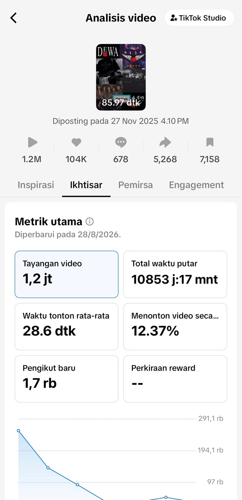
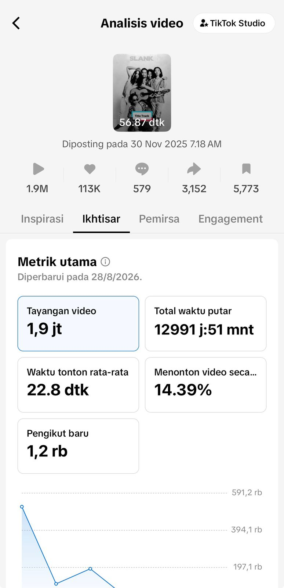
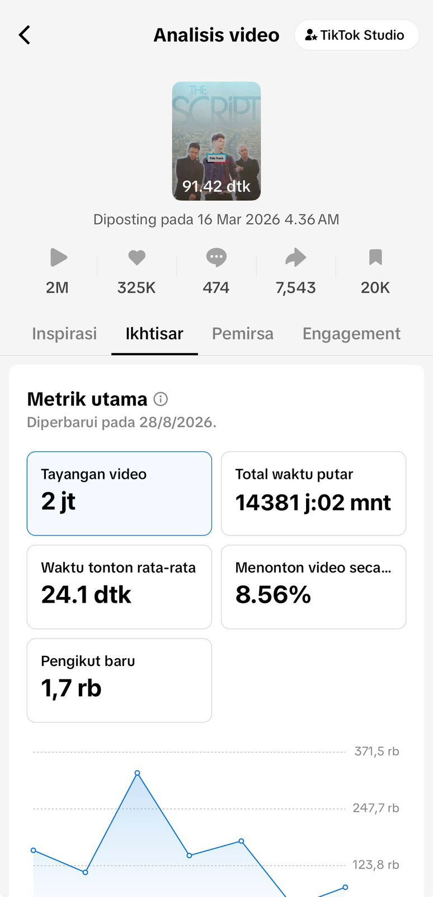
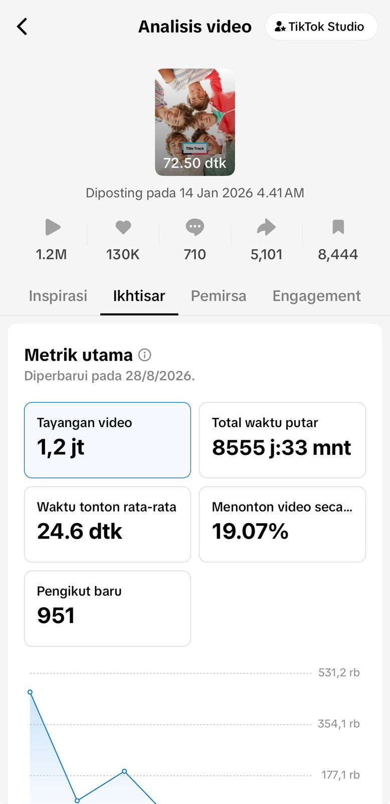
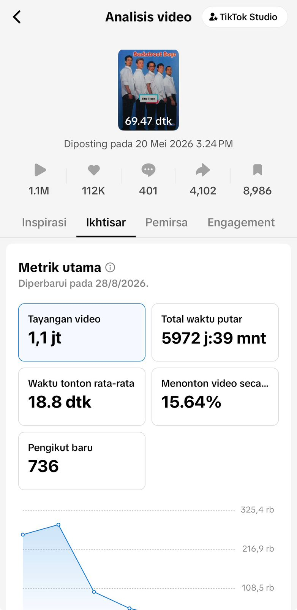

⚡ Deep Dive Analytics
Analisis Performa TikTok Studio
Dokumentasi lengkap metrik mendalam, grafik jangkauan organik, dan statistik interaksi pemirsa dari konten edukasi musik.
Total Akumulasi Likes
3,8 Juta+
Pengikut Organik
17.2K+
Jangkauan Views
34 Juta
📊 Detail Statistik
Overview & Performa Akun Keseluruhan
Statistik Utama

Detail Pengikut
Metrik Konten

Analisis Video & Retensi
Engagement

📱 Detail Analisis
Performa Video 1
Insights

Performa Video 2
Insights

Performa Video 3
Insights

Performa Video 4
Insights

Performa Video 5
Insights

Performa Video 6
Insights

Performa Video 7
Insights

Performa Video 8
Insights
